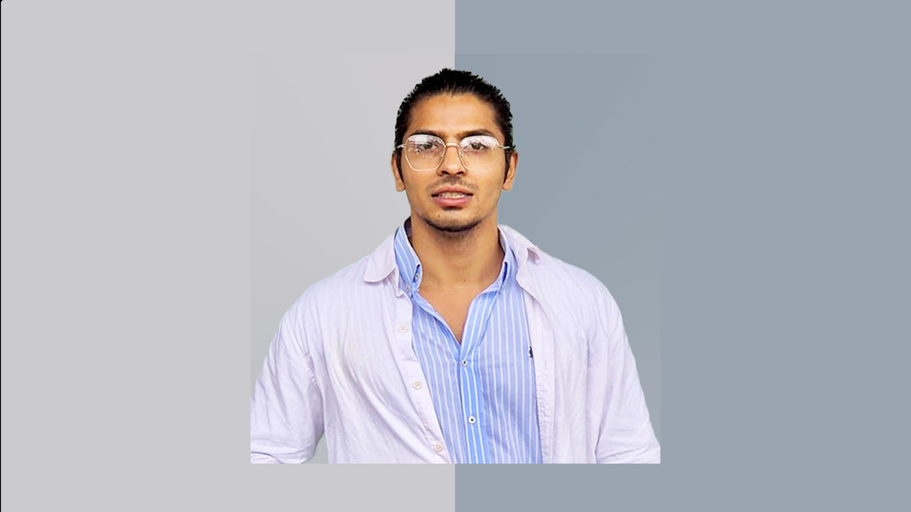

CHAPTER 01
Where It Started
I was born and raised in Lahore, Pakistan. From an early age, I was fascinated by technology, problem-solving, and the idea of building things that create value. Did my O/A Levels from LACAS, Lahore, Pakistan.
Enter password to continue

I was born and raised in Lahore, Pakistan. From an early age, I was fascinated by technology, problem-solving, and the idea of building things that create value. Did my O/A Levels from LACAS, Lahore, Pakistan.
During my bachelor's studies from FCCU in Computer Science, I had the opportunity to participate in an exchange program in Izmir, Turkey. Living abroad for the first time broadened my perspective and introduced me to new cultures.
Germany became one of the most transformative chapters of my life. I moved here to pursue my Master's degree in Computer Science (Specialisation 1: Intelligent Systems | Specialisation 2: Data Visualation and Scientific Computing) from RPTU and have spent several years growing academically, professionally, and personally.
Building Anata Digital
Entrepreneurship
Artificial Intelligence
Continuous Learning
Exploring Different Cultures
Creating Meaningful Impact
Syed Shia family.
Father is a successful businessman (Import/Export).
Mother is a homemaker.
Blessed with 5 elder brothers:
1. My eldest brother is settled in Australia and works as a Project Manager. He is an engineer by profession and is well-established in his career. He is happily married, and his wife is also a working professional.
2. My second brother is an Electrical Engineer and settled in Australia, happily married and blessed with three children, two sons and one daughter.
3. My third brother is based in Lahore and works in the field of U.S. tax filing and accounting. He is married and has two children, one son and one daughter. His wife is a doctor.
4. My fourth brother is working in Kuwait in the supply chain sector. He is married, and his wife is a doctor who is also working in Kuwait. He is dedicated to his profession and has built a successful career abroad.
5. My fifth brother is a Lawyer based in Lahore. He is currently unmarried and focused on his legal career.
Seeking a religious, open minded, family-oriented, and career-minded girl from a reputed family, who shares similar values and is open to settling in Germany/Australia in the future.
At the moment, I am self employeed, Running Anata Digital. My goal is to continue growing through research, entrepreneurship, and meaningful projects. I plan to pursue a PhD in Australia while continuing to explore other opportunities.